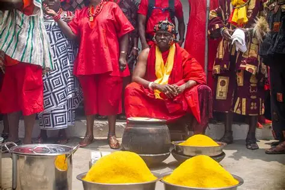
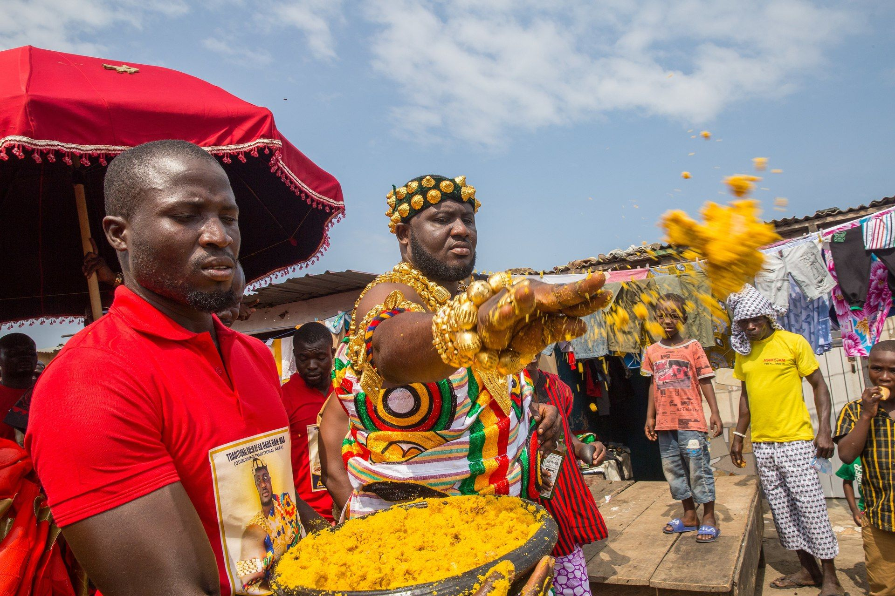
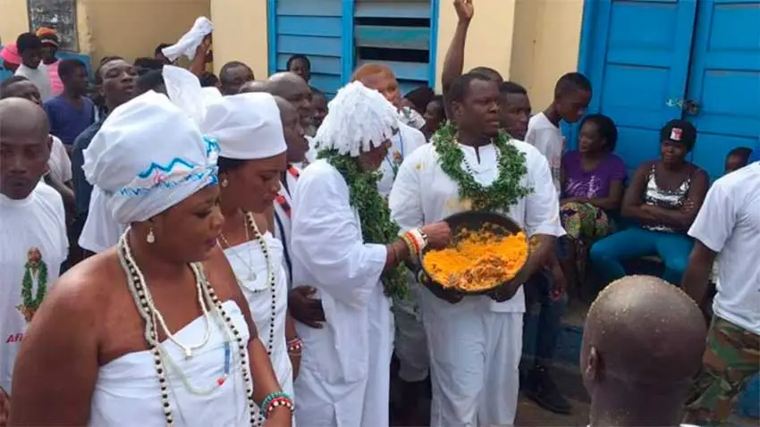

Homowo
Celebrating harvest and the sprinkling of Kpokpoi — a proud communal feast.



High-impact visuals that tell the story of Ghanaian identity, royalty, and communal joy. Click any image to open a full-screen view with background and context.
Celebrating harvest and the sprinkling of Kpokpoi — a proud communal feast.
Anlo‑Ewe pageantry: processions, historical dances, and communal memory.
A dramatic deer‑hunting rite where courage and ritual meet.
This ritual involves the firing of guns to salute the ancestors and fallen heroes who fought to protect the land.